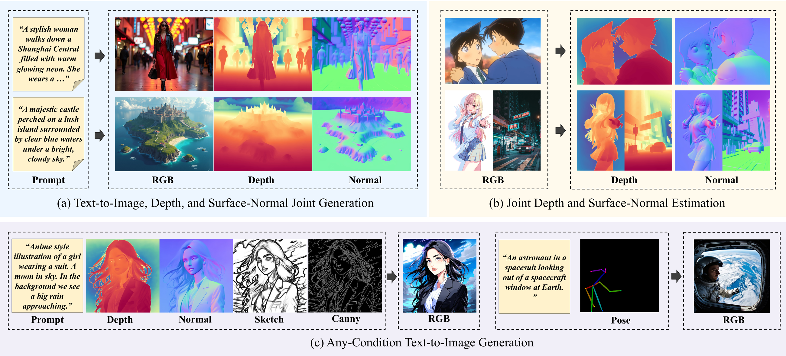

UniGP
Taming Diffusion Transformer for Prior-Preserved Unified Generation and Perception
1The Hong Kong University of Science and Technology
2DAMO Academy, Alibaba Group, Zhejiang, China
3Hupan Lab, Zhejiang Province
4Zhejiang University, Zhejiang, China
5Tsinghua University
6The Chinese University of Hong Kong
7Zeekr Automobile R&D Co., Ltd.
†Corresponding author

UniGP simultaneously models RGB and dense distributions in a single diffusion transformer, supporting joint generation, dense perception, and any-condition text-to-image generation.